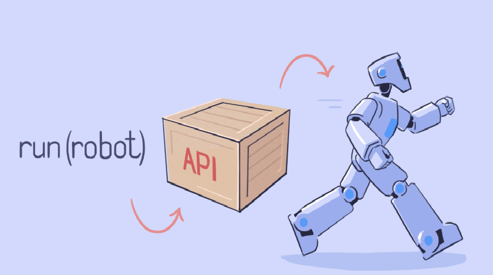

Почему API так популярны у программистов?
Программные интерфейсы сервисов и библиотек позволяют разработчикам не изобретать велосипеды. Зачем писать код, когда можно воспользоваться готовым?
Вот какие возможности даёт API:
1) Предоставляет доступ к готовым инструментам. Например, к функциям библиотеки для машинного обучения TensorFlow — они помогают быстро создать нейросеть, не тратя время на разработку инструментов с нуля.
2) Повышает безопасность. API позволяет вынести в отдельное приложение функциональность, которая должна быть защищена. Так снижается вероятность некорректного использования этих функций другими программами.
3) Связывает разные системы. Если вам нужно подключить к сайту платёжную систему или авторизацию через соцсети, без API не обойтись.
4) Снижает стоимость разработки. Часто бывает, что дешевле воспользоваться платным API, чем создавать функциональность с нуля.
Стороннее API обычно безопасное, потому что над ним работает коммерческая организация или целое сообщество разработчиков. И конечно, с его помощью даже работа над сложными проектами становится проще и приятнее.2) В операционной системе он помогает программам получать данные из памяти или менять настройки ОС. Поэтому, чтобы разрабатывать приложения под конкретную операционную систему, нужно знать её API.
Написали одну строчку кода, подключили API — робот побежал